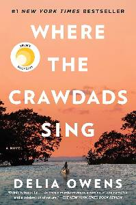
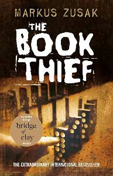
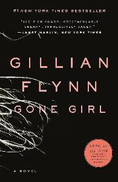
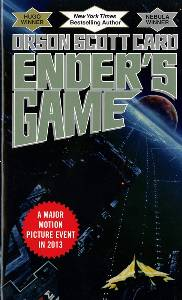

Last summer, I took a road trip from Seattle to San Francisco. Started with the Space Needle in Seattle, drove down the Pacific Coast Highway for amazing views, hit Olympic National Park's forests and lakes. Portland was all about good food and a chill atmosphere. Crater Lake was stunning, and San Francisco wrapped it up with the Golden Gate Bridge. It was a fun trip with lots of cool sights.
My favorite resurant is Goldburgers in Newington, CT: goldburgers.com
It is a local resturant to me, and are my top pick for a simple reason – they serve the best burgers in town. The menu is stacked with mouthwatering options, from classic cheeseburgers to inventive specials that never disappoint. The friendly staff and cozy atmosphere make it feel like a second home, and the place buzzes with a sense of community. It's not just about the food; it's the perfect blend of great flavors and a laid-back vibe that keeps me coming back for more. It's not just a restaurant; it's my go-to spot for a reliably delicious meal and a chill atmosphere.
I'm a pepperoni pizza enthusiast through and through. I like it hot and fresh out of the oven, with that perfect balance of gooey cheese and crispy crust. I'm all about the classic - a generous layer of pepperoni that crisps up at the edges. No frills, just a straightforward slice that I can fold in half for that satisfying bite. Whether it's a solo meal or a gathering with friends, a box of pepperoni pizza is my go-to, and I savor every cheesy, savory moment.
| Book Title | Cover | Author | Summary |
|---|---|---|---|
| Where the Crawdads Sing |  | Delia Owens | "Where the Crawdads Sing" is a poignant coming-of-age mystery that follows Kya Clark, the "Marsh Girl," as she grows up isolated in the North Carolina marshes, blending nature's wonders with a murder investigation, weaving a tale of loneliness, resilience, and love. |
| The Book Thief |  | Markus Zusak | "The Book Thief" narrated by Death, tells the story of Liesel Meminger, a young girl living in Nazi Germany, as she steals books and shares them with others during a time of profound adversity, exploring the power of words and human connection in the face of darkness. |
| Gone Girl |  | Gillian Flynn | "Gone Girl" is a psychological thriller that unfolds the disturbing dynamics of a marriage when Amy Dunne goes missing on her fifth wedding anniversary, revealing a tangled web of secrets, lies, and a mind-bending game of manipulation between her and her husband, Nick. As the search intensifies, the story takes unexpected twists, keeping readers on the edge with its dark and unpredictable narrative. |
| Ender's Game |  | Orson Scott Card | "Enders Game" follows the prodigious young strategist Ender Wiggin as he undergoes rigorous training at a military school in space to defend Earth against an alien threat known as the Formics. Ender's unparalleled strategic mind is tested in high-stakes simulations, leading to an unexpected twist in the ultimate battle for humanity's survival. |